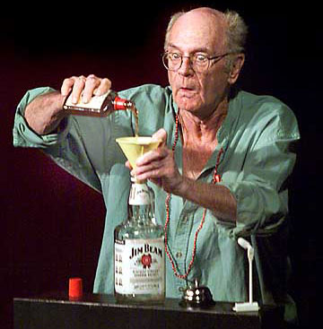
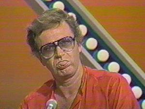
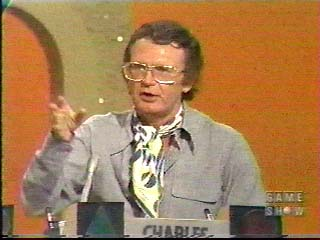
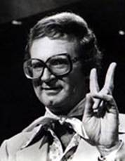
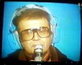
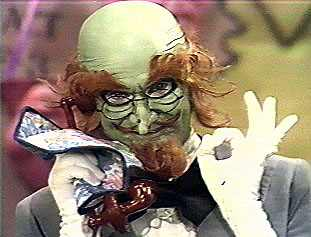
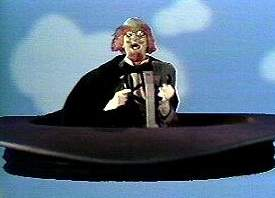

|
 Charles Nelson Reilly"When I die, it's going to read, 'Game Show Fixture Passes Away'. Nothing about the theater, or Tony Awards, or Emmys. But it doesn't bother me." Charles Nelson Reilly (b. January 11, 1931) is indeed a cult figure best known as the wisecracking celebrity panelist on 1970s game show series Match Game. He was the guy on the upper right, the one smoking a hornpipe and wearing a captain's hat, breezy ascot, and oversize coke-bottle glasses. Reilly grew up in the Bronx. His mother was a belligerent Swede who rarely left the house without a baseball bat. She had ethnic slurs for nearly every race, and she'd shout them regularly from the safety of her apartment window. His father was a henpecked Irish Catholic, a brush artist for movie posters at Paramount studios. When the studio started hiring photographers to design their posters, brush artists fell out of favor. Charles' father lost his job and became an alcoholic. Charles was, admittedly, a weak child in a tough neighborhood. A sickly, nearsighted boy, he'd climb into his mother's sewing basket and create puppet shows. He had no interest in sports, and he wasn't always able to hide the mannerisms and persona which marked him unmistakably as homosexual -- earning him the nickname of "Mary" from his immediate peer group. At age nine, he got the lead in a school play about Christopher Columbus. His teacher told his mother that Charles was the only true actor she'd ever known. When he was eleven, he and a friend went to the circus in Hartford, Connecticut and a fire started under the circus tent. Reilly and his friend escaped, but 168 people, including many children, died in the stampede to evacuate. For this reason, Charles hasn't sat in an audience for anything -- including a movie -- since July 6, 1944. He decided to work backstage instead, and by the time he was 18, he was studying with Uta Hagen. His classmates included Jack Lemmon, Charles Grodin, Gene Hackman, Shelley Berman and Jason Robards. "They couldn't act for shit!" Reilly remembers. "They stunk! If we had to watch Hal Holbrook and Steve McQueen do the brothers scene from Death of a Salesman once more, we'd go out of our minds!'" Between 1950 and 1960, he landed parts in twenty-two off-Broadway shows, including minor roles in Bye Bye Birdie, serving as the understudy for Dick Van Dyke and Paul Lynde. As Bud Frump in the Pulitzer Prize-winning musical How to Succeed in Business Without Really Trying, he earned a Tony Award -- and in 1964, he received the New York Critic's Circle award for his work as juvenile lead Cornelius Hackel in Hello, Dolly. Herald Tribune critic Walter Kerr wrote, "If I see Mr. Reilly's young, energetic face in one more opening number, I'm going to be sick." When Dick Van Dyke left Bye Bye Birdie, he was replaced by Gene Rayburn, later the host of Match Game and long-time friend of Charles. As Match Game grew in popularity, Reilly was invited onto TattleTales and Hollywood Squares -- and somehow he ended up on every game show in town. He became a bigger personality than an actor. One night in the early 1970s, he realized that he was going to be appearing on game shows 27 times that week. "I was told years ago that I would never be allowed on television," he recalls. "Now I had to try to find out who you have to fuck to get off." When the BIC ballpoint pen manufacturer decided to roll out their new product, the BIC Banana Pen, they singled out Reilly as the only man who could possibly deliver their urgent message to consumers. As chief spokesman, Mr. Reilly dressed up in an bright yellow banana costume and pranced about the neighborhood, singing and shouting maniacally about BIC Banana Ink Crayons. Oh we've gone bananas / for BIC Banana ink crayons / You'll learn to write a lot of ways: "Today I'm going to teach you how to draw with BIC Banana Ink Crayons. See what smooth lines the BIC Banana Ink Crayons make! Oh ho ho! They also make fat lines! See what bright colors BIC Banana Ink Crayons make! [Snorts and huffs] Haw haw haw haw hee hee [fart sounds] hoo hoo hoo hee hee hee! There's so much to learn about coloring and drawing with BIC Banana Ink Crayons at school! After all, I should know! I'm the BIC Banana!" [excitable pansy laughter, fade to black]. Inspired by Reilly's bravura performance, Sid and Marty Kroft (creators of Sigmund and the Sea Monsters, Land of the Lost, Bugaloos and H.R. Pufnstuf) secured him to play the role of the evil villain Horatio J. Hoodoo The Magnificent in their lesser-known creation, Lidsville. Any one of these shows alone is interminable, but somehow Charles Nelson's presence made it palatable. "Doing that show was shit," Reilly recalls. "They were all a bunch of shits." Charles is now performing a one-man play, Save it for the Stage: The Life of Reilly, which is ranked by critics among the all-time-greatest single-actor evenings of hilarious, intimate theater. In his show, which approaches three hours in length, he talks about the perception many Americans seem to have that he is no longer among the living. "They call the box office here at the Irish Repertory Theater," Mr. Reilly says onstage. "We have a lovely treasurer named Jeffrey, and they say, 'Who's playing the part of Reilly in The Life of Reilly?' And he says, 'Charles Nelson Reilly.' And they say, 'He's dead! The tall one with the wig and the big glasses is dead.' So Jeffrey says, 'Yes, madam, he is dead. But he still manages to come in every night at eight.'" Reilly's partner from 1980, Patrick Hughes III, worked as the dresser in the art department on Witch Hunt, a made-for-TV zombie movie in 1994 featuring Julian Sands, Eric Bogosian, and Dennis Hopper as H.P. Lovecraft. Charles has lived at the Wyndham Hotel on West 58th street in New York for over two decades. His most recent television cameo of note was the character of Josie Chung on an episode of The X-Files. |